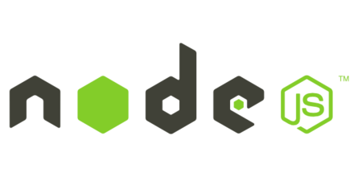

node.js+generator+koa.js 初级入门
by 王兴龙
by 王兴龙
快 极致原则
var http = require('http');
http.createServer(function (req, res) {
res.writeHead(200, {'Content-Type': 'text/plain'});
res.end('Hello World\n');
}).listen(80);
koadoAsync1(function () {
doAsync2(function () {
doAsync3(function () {
doAsync4(function () {
doAsync5(function () {
}
}
})
})
})
Generatorinterface Generator {
next()
throw(e)
}
function* helloWorldGenerator() {
yield 'hello';
yield 'world';
return 'ending';
}
var hw = helloWorldGenerator();
hw.next() // { value: 'hello', done: false }
hw.next() // { value: 'world', done: false }
hw.next() // { value: 'ending', done: true }
hw.next() // { value: undefined, done: true }
function* f() {
for(var i=0; true; i++) {
var reset = yield i;
console.log(reset)
}
}
var g = f();
console.log(g.next()); // { value: 0, done: false }
console.log(g.next(2)); // { value: 1, done: false }
console.log(g.next(true)); // { value: 0, done: false }
function fibonacci(num) {
num = +num;
if (num === 1) {
return [0];
}
if (num === 2) {
return [0, 1];
}
if (num > 2) {
var arr = fibonacci(num - 1);
arr[num - 1] = arr[num - 2] + arr[num - 3];
return arr;
}
return [];
}
console.log(fibonacci(9)); // [0, 1, 1, 2, 3, 5, 8, 13, 21]
function* fib(max) {
var count = 0, last = 0, current = 1;
while(count++ < max) {
yield current;
var tmp = current;
current += last;
last = tmp;
}
}
for(var i of fab(9)) {
console.log(i) // [0, 1, 1, 2, 3, 5, 8, 13, 21]
}
function* main() {
var result = yield request("http://some.url");
var resp = JSON.parse(result);
console.log(resp.value);
}
function request(url) {
ajax(url, function(response){
it.next(response);
});
}
var it = main();
it.next();
var koa = require('koa');
var app = koa();
app.use(function *() {
this.body = 'Hello World!';
});
app.listen(8888);
var koa = require('koa');
var app = koa();
// x-response-time
app.use(function *(next){
var start = new Date;
yield next;
var ms = new Date - start;
this.set('X-Response-Time', ms + 'ms');
});
// logger
app.use(function *(next){
var start = new Date;
yield next;
var ms = new Date - start;
console.log('%s %s - %s', this.method, this.url, ms);
});
// response
app.use(function *(){
this.body = 'Hello World';
});
app.listen(3000);
sm-koa
即便可能会失败，但至少是一次探索